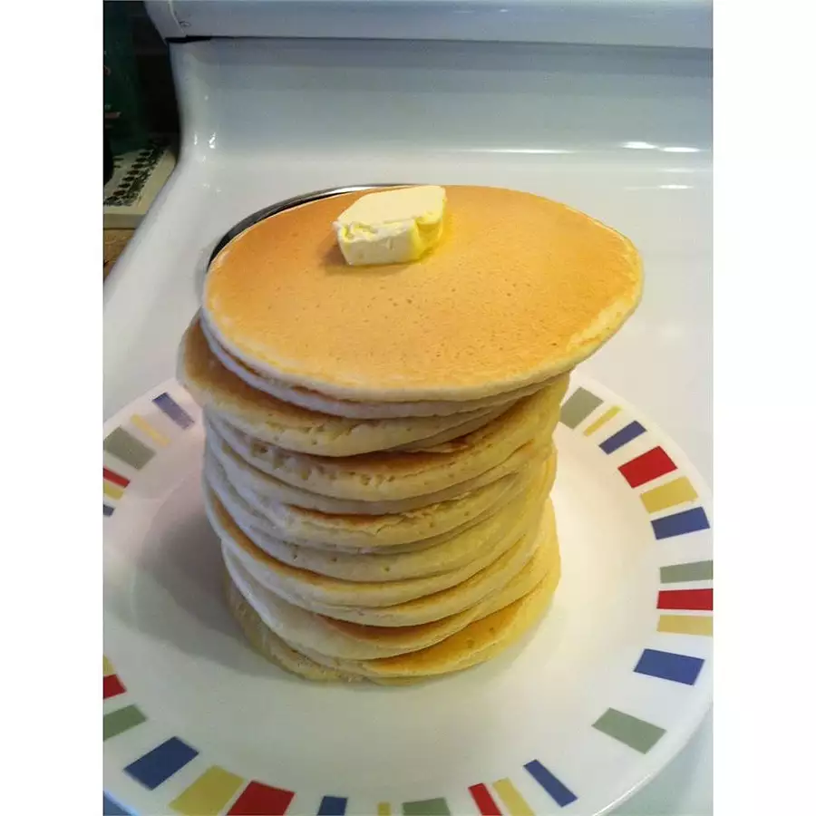

Recipe for Pancakes
I will show you how to make the perfect panckes for your morning breakfast!

To prepare pancakes it will take about 5 minutes and around 10 mintues to cook them. This recipe serves for 6 people
Ingrediants
- 2 large eggs
- 2 teaspoons white sugar
- 1 pinch salt
- 2 cups all-purpose flour
- 2 teaspoons baking power
- 2 cups milk
Directions
- Step 1: Beat eggs until fluffy; beat in sugar and salt. In a separate bowl, stir flour and baking powder together. Stir milk and flour mixture alternately into eggs, starting and ending with milk.
- Step 2: Heat a lightly oiled griddle or frying pan over medium high heat. Pour or scoop the batter onto the griddle, using approximately 1/4 cup for each pancake. Do not turn pancake until tiny holes appear all over the uncooked side (top) of the pancake in the pan. Brown on both sides and serve hot.
- Enjoy!